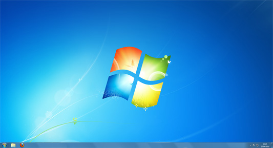

Mi Experiencia con los sistemas operativos
Para mi por circuntancias de la vida, e probado desde siempre Windows , en versiones antiguas como windows xp , windows 7 ,8 y 10, osea que e explorado la evolucion de este sistema , sus desventajas y compatibilidad. Ademas e probado sistemas con kernel de linux y en maquinas virtuales.
Esta interacción constante me ha permitido comprender que un sistema operativo no es solo software, sino el puente directo que transforma nuestras ideas en soluciones digitales reales y eficientes. Para mi el mejor sistema operativo es el windows 7 ya que es el mas equilibrado , liviano y sin telemetria , su gran desventaja es que ya no tiene soporte tecnico.
